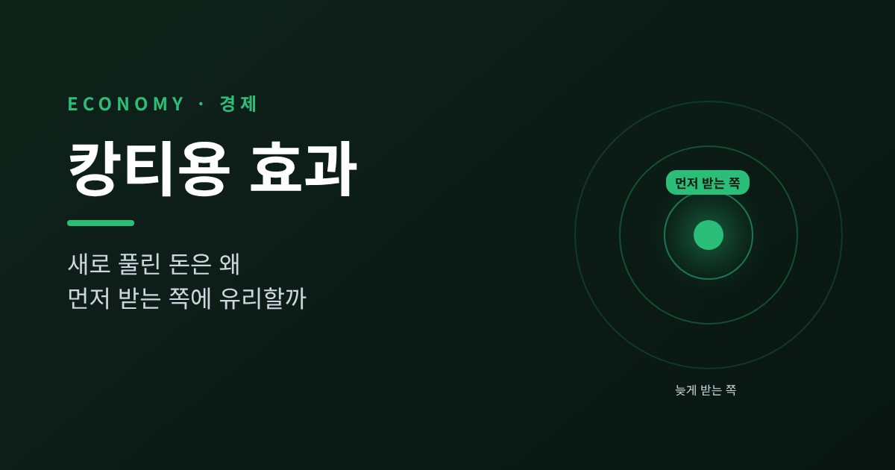
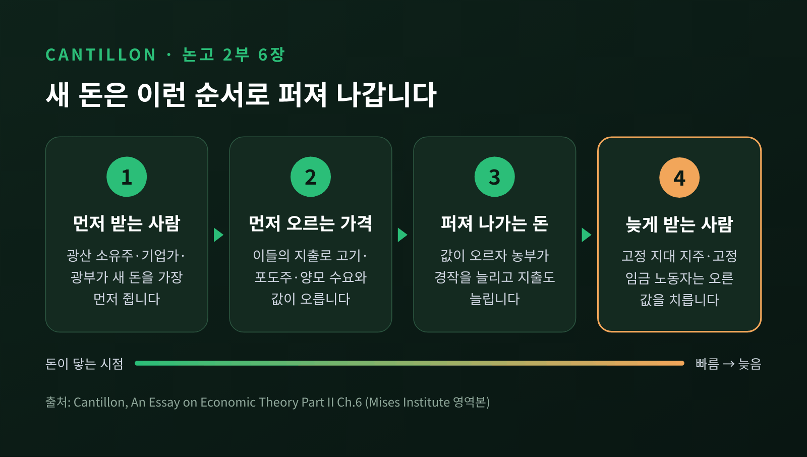
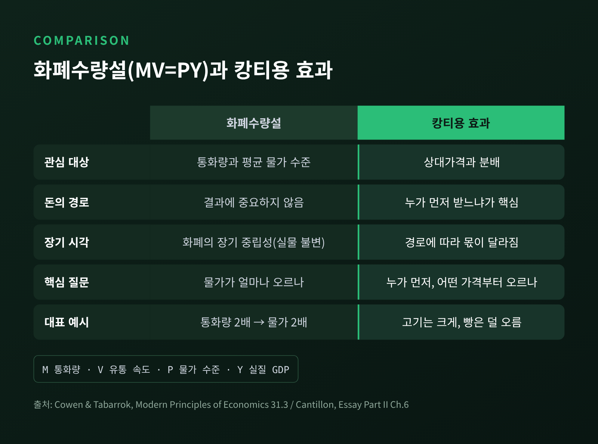
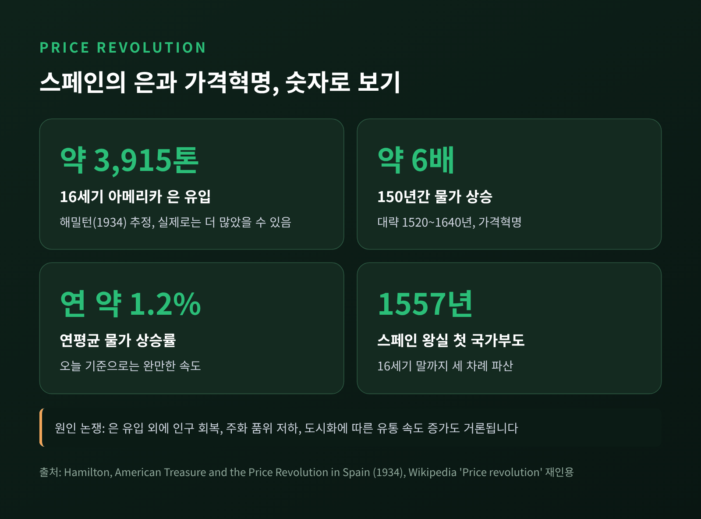
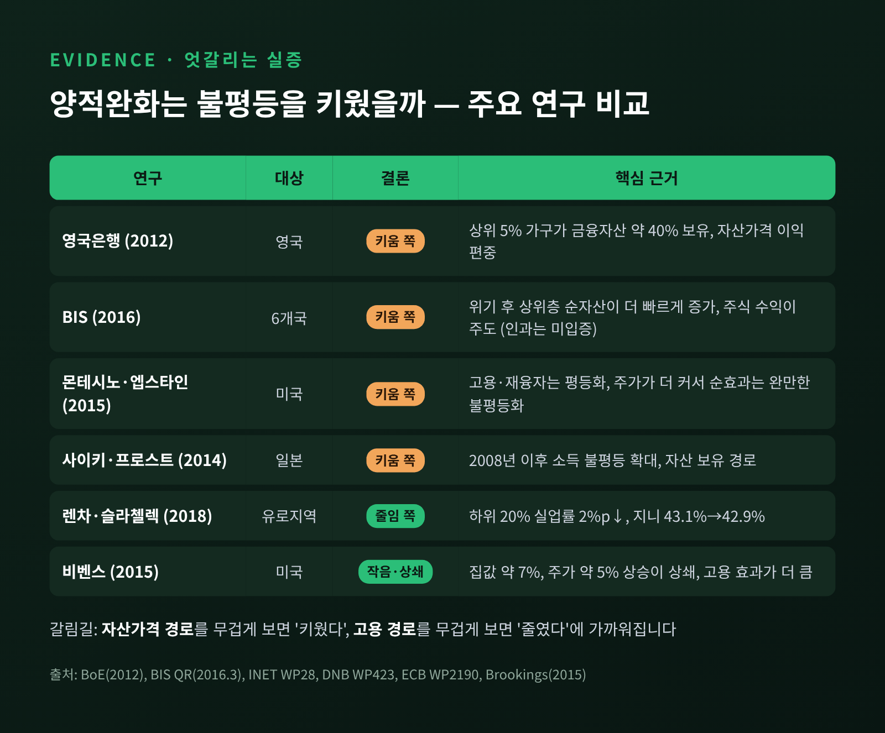
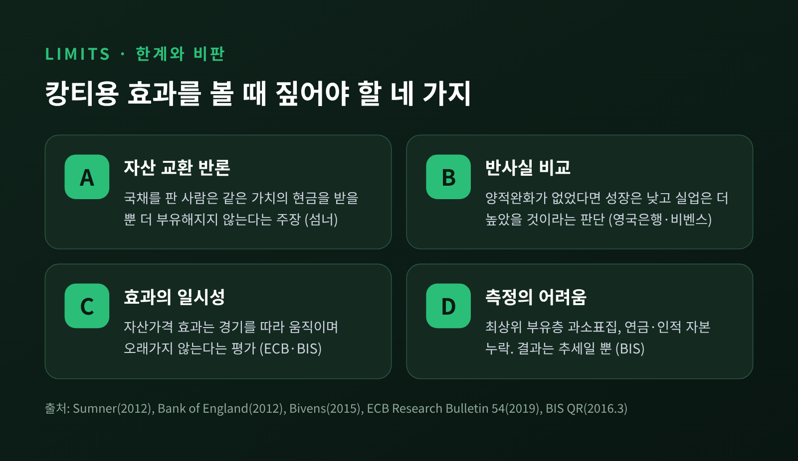

캉티용 효과란 — 새로 풀린 돈은 왜 먼저 받는 쪽에 유리할까

이번 글에서는 '캉티용 효과'를 정리해 보겠습니다. 새로 풀린 돈이 누구 손에 먼저 닿느냐에 따라 물가와 분배가 달라진다는 생각입니다. 300년 전 한 은행가의 관찰이 오늘날 양적완화 논쟁까지 이어진 과정을 차례로 따라가 봅니다.
먼저 핵심만 세 줄로 요약합니다.
- 캉티용 효과는 통화량이 늘 때 모든 가격이 한꺼번에 같은 비율로 오르지 않는다는 원리입니다. 돈이 먼저 닿는 곳의 가격이 먼저 오르고, 늦게 받는 사람은 오른 값을 치릅니다.
- 평균 물가에 주목하는 화폐수량설(MV=PY)과 달리, 캉티용은 돈이 흘러가는 경로와 상대가격, 그리고 분배를 봅니다.
- 양적완화(QE)가 불평등을 키웠는지에 대해서는 연구마다 결론이 엇갈립니다. 자산가격 경로를 보면 키웠다는 결과가, 고용 경로를 보면 줄였다는 결과가 나옵니다.
■ 300년 전 은행가가 남긴 한 권의 책
리샤르 캉티용(Richard Cantillon)은 1680년대 아일랜드 케리 지방에서 태어난 것으로 추정됩니다. 정확한 출생 연도는 알려져 있지 않습니다. 그는 프랑스에서 활동한 은행가이자 투기가였습니다.
그가 큰돈을 번 무대는 존 로(John Law)의 미시시피 회사였습니다. 캉티용은 이 회사 주식을 일찍 사서 비싸게 팔았습니다. 정작 그 체제가 오래가지 못할 것이라고 보았다고 전해집니다. 미시시피 버블과 남해회사 버블 시기에 투기자들에게 돈을 빌려주고 환율에 투자해 큰 재산을 모았습니다.
1734년 5월, 런던의 자택이 불에 탔습니다. 그는 그 화재 속에서 숨진 것으로 알려져 있습니다. 살해설이 유력하지만, 죽음을 꾸며 사라졌다는 주장도 있습니다.
그가 남긴 책이 『상업 일반의 본질에 관한 논고(Essai sur la nature du commerce en général)』입니다. 1730년대 초에 쓰였고, 필사본으로 돌다가 그의 사후인 1755년에야 프랑스어로 출간되었습니다. 19세기에는 한동안 잊혔습니다. 그러다 경제학자 윌리엄 스탠리 제번스가 다시 찾아내 "정치경제학의 요람"이라고 불렀습니다.
■ 새 돈은 어떤 순서로 퍼지는가
캉티용 효과의 원형은 『논고』 2부 6장에 있습니다. 캉티용은 금은 광산에서 새 돈이 쏟아져 나오는 상황을 가정합니다.
첫 번째로 돈을 손에 쥐는 사람은 광산 소유주, 기업가, 제련업자, 그리고 광부입니다. 이들은 늘어난 수입만큼 지출을 늘리고, 남는 돈은 이자를 받고 빌려줍니다. 캉티용의 표현을 빌리면 "늘어난 돈은 늘어난 지출을 낳습니다."
다음 차례는 이들이 사는 물건입니다. 고기, 포도주, 양모 같은 상품의 수요가 늘고 값이 오릅니다. 값이 오르자 농부는 더 많은 땅을 경작하고, 농부 역시 지출을 늘립니다. 돈은 이렇게 한 시장에서 다음 시장으로 번져 갑니다.

문제는 맨 끝에 있는 사람들입니다. 캉티용은 임대 계약 기간 중인 지주, 가사 노동자, 고정 임금을 받는 노동자를 꼽았습니다. 이들의 수입은 그대로인데 물건값은 이미 올라 있습니다. 지출을 줄이거나, 일자리를 잃거나, 다른 곳으로 떠나거나, 임금 인상을 요구할 수밖에 없습니다. 지주는 계약이 끝난 뒤에야 지대를 올릴 수 있습니다.
캉티용은 돈이 어디서 들어오느냐에 따라 효과도 달라진다고 보았습니다. 광산에서 나온 돈은 소비를 통해 비교적 빨리 퍼집니다. 반면 무역흑자로 들어온 돈은 상인과 기업가가 먼저 이득을 보고, 다른 이들은 시간이 지나서야 지출을 늘립니다.
같은 양의 돈이라도, 어디로 들어와 누구를 거쳐 가느냐가 결과를 바꿉니다.
■ 화폐수량설과 무엇이 다른가
화폐와 물가의 관계를 다룰 때 흔히 쓰는 식이 MV=PY입니다. M은 통화량, V는 돈이 1년에 손을 바꾸는 평균 횟수(유통 속도), P는 물가 수준, Y는 실질 GDP입니다. 양변은 모두 명목 GDP, 곧 한 해 동안 최종 재화에 쓰인 돈의 총액을 뜻합니다.
교과서적 화폐수량설은 두 가지를 가정합니다. 장기적으로 실질 GDP는 자본·노동·기술 같은 실물 요인이 정하고, 유통 속도는 느리게 변한다는 것입니다. 그렇다면 지속적인 물가 상승은 결국 통화량 증가에서 옵니다. 통화량이 두 배가 되면 물가도 두 배가 되고, 실물 경제는 그대로라는 '화폐의 장기 중립성'이 여기서 나옵니다. 물론 교과서도 단기에는 예상치 못한 통화 증가가 생산을 일시적으로 늘릴 수 있다고 인정합니다.
캉티용도 존 로크의 화폐수량설 전통 위에 서 있었습니다. 다만 그가 본 것은 평균이 아니라 경로였습니다. 그는 돈이 늘면 가격이 오른다고 했지만, "어느 비율로" 오르는지 아는 것이 "큰 어려움"이라고 털어놓았습니다. 고기 값은 일부 소비자만 덜 먹어서 크게 오르고, 빵 값은 부담이 전체 인구에 흩어져 덜 오를 수 있다는 예도 들었습니다. 모든 가격이 함께 움직이지 않는다는 뜻입니다.

두 시각은 서로를 완전히 부정하지 않습니다. 화폐수량설이 긴 시간에 걸친 물가 수준의 방향을 설명한다면, 캉티용 효과는 그 과정에서 누가 이득을 보고 누가 부담을 지는지를 묻습니다.
■ 스페인의 은, 첫 번째 거대한 실험
캉티용은 자신의 논리를 설명하며 스페인을 예로 들었습니다. "인도 발견 이후 스페인에서 대략 이런 일이 일어났다"는 것입니다.
16세기 아메리카 대륙의 은은 세비야로 쏟아져 들어왔습니다. 경제사학자 얼 해밀턴은 1934년 연구에서 16세기 정화 유입을 약 2억 1천만 페소, 은으로는 약 3,915톤으로 추정했습니다. 공식 기록만 센 수치라 실제로는 더 많았을 가능성이 있습니다. 1560년대 안데스에서 수은 광상이 발견되면서 포토시 은광의 생산도 크게 늘었습니다.
같은 시기 유럽에는 '가격혁명'이 일어났습니다. 대략 1520년부터 1640년 사이, 물가는 150년에 걸쳐 평균 6배쯤 올랐습니다. 연평균으로는 1.2% 안팎이니, 오늘의 눈으로 보면 완만한 수준입니다. 다른 추정은 세기 말 물가가 세기 초의 3~4배였다고 봅니다.

캉티용의 해석은 이렇습니다. 광산의 부는 가장 먼저 스페인에 도착했습니다. 그러나 스페인 사람들은 그 돈으로 외국 상품을 샀고, 돈은 해외로 빠져나갔습니다. 결국 외국인이 부유해지고 스페인은 가난해졌다는 것입니다. 실제로 스페인 왕실은 은 유입을 다스리지 못한 데다 전쟁 비용까지 겹쳐 1557년 첫 국가부도를 선언했고, 16세기 말까지 세 차례 파산했습니다.
다만 이 사례를 은 하나로만 설명하기는 어렵습니다. 흑사병 이후 인구가 회복되며 식량 수요가 늘었다는 설명, 주화의 은 함량을 낮춘 품위 저하가 원인이라는 설명, 도시화로 돈이 더 자주 돌았다는 설명이 함께 거론됩니다. 가격혁명의 원인은 지금도 논쟁 중입니다.
■ 양적완화와 캉티용 효과 — 엇갈리는 연구들
예전에는 새 돈이 광산에서 나왔습니다. 지금은 중앙은행의 대차대조표에서 나옵니다.
미국 연방준비제도(연준)의 자산은 2008년 금융위기 이전 약 8천억~9천억 달러 수준이었습니다. 세 차례 양적완화가 끝난 2014년 10월에는 4조 5천억 달러가 되었고, 팬데믹 대응을 거친 2022년에는 약 9조 달러에 이르렀습니다. 영국은행도 총 3,750억 파운드의 자산매입을 승인했습니다.
양적완화는 중앙은행이 주로 국채를 사들이는 방식입니다. 그래서 새 돈이 가장 먼저 닿는 곳은 금융시장이고, 먼저 오르는 가격은 채권·주식 같은 자산가격이라는 해석이 나옵니다. 이것이 현대판 캉티용 효과 논쟁의 출발점입니다. 그런데 실증 연구의 결론은 하나로 모이지 않습니다.
불평등을 키웠다는 연구
- 영국은행(2012)은 양적완화가 가계 순금융자산을 약 16%, 6,000억 파운드 남짓 끌어올렸다고 추정했습니다. 그런데 상위 5% 가구가 가계 금융자산의 약 40%를 갖고 있었고, 중위 가구의 금융자산은 약 1,500파운드에 그쳤습니다. 자산가격 상승의 이익이 고르게 돌아가지 않았다는 뜻입니다.
- 국제결제은행(BIS, 2016)은 6개국을 시뮬레이션한 결과, 금융위기 이후 상위 5분위의 순자산이 2분위보다 미국에서 4배, 프랑스에서 5배 빠르게 늘었다고 보고했습니다. 2010년 이후 이를 이끈 주된 요인은 주식 수익이었습니다.
- 몬테시노와 엡스타인(2015)은 미국 자료로 양적완화의 순효과가 "완만하게 불평등을 키웠다"고 결론 내렸습니다. 일본을 분석한 사이키와 프로스트(2014)도 2008년 이후 소득 불평등이 확대되었고, 주된 경로는 자산 보유였다고 보았습니다.
불평등을 줄였거나 영향이 작다는 연구
- 유럽중앙은행의 렌차와 슬라첼렉(2018)은 유로지역 자산매입으로 실업률이 약 0.7%p 낮아졌다고 추정했습니다. 소득 하위 20%의 실업률은 2%p 넘게 떨어졌고, 이들의 평균소득은 약 3% 늘었습니다. 지니계수는 43.1%에서 42.9%로 소폭 개선되었습니다. 유럽 가계 자산의 70~80%가 주택이어서 집값 효과가 주가 효과보다 컸습니다.
- 미국의 비벤스(2015)는 양적완화가 집값을 약 7%, 주가를 약 5% 끌어올렸다고 추정했습니다. 중산층은 주택을, 부유층은 주식을 더 많이 가진 만큼 두 효과가 상당 부분 상쇄되며, 일자리를 지킨 효과가 더 크다고 보았습니다.

결론이 갈리는 이유는 어느 경로를 무겁게 보느냐에 있습니다. 자산가격을 보면 이미 자산을 가진 사람이 먼저 이득을 봅니다. 고용을 보면 경기 침체에서 가장 먼저 일자리를 잃는 저소득층이 혜택을 받습니다. 여기에 주식과 주택 중 어느 쪽이 더 올랐느냐도 결과를 바꿉니다. BIS는 미국의 경우 주가가 10% 오를 때 집값이 약 4.25% 올라야 분배가 중립이 된다고 계산했습니다.
2019년에 나온 한 종합 서베이(콜치아고 외)는 이렇게 정리합니다. 비전통적 통화정책은 경기를 살려 소득 불평등을 줄일 수도 있고, 자산가격을 올려 키울 수도 있어 증거가 엇갈린다는 것입니다.
■ 한계와 비판도 함께 보아야 합니다
캉티용 효과는 직관적이지만, 그대로 받아들이기 전에 짚어 볼 점이 있습니다.

첫째, 자산 교환이라는 반론입니다. 경제학자 스콧 섬너는 연준이 국채를 살 때 판매자는 같은 가치의 자산을 현금으로 바꿀 뿐 더 부유해지지 않는다고 지적했습니다. 그래서 누가 돈을 먼저 받는지는 큰 의미가 없고, 중요한 것은 총지출이 늘어나는지라는 주장입니다. 진짜 캉티용 효과는 중앙은행이 특정 상품을 직접 살 때 생기며, 그것은 재정정책의 영역이라는 것입니다. 반면 오스트리아학파 쪽에서는 이런 시각이 실제 수혜자의 차이를 가볍게 본다고 반박합니다.
둘째, 무엇과 비교하느냐의 문제입니다. 영국은행은 양적완화가 없었다면 성장은 더 낮고 실업과 기업 도산은 더 많아 대부분이 더 나빠졌을 것이라고 판단했습니다. 비벤스도 같은 질문을 던졌습니다.
셋째, 효과의 지속성입니다. 유럽중앙은행, BIS, 비벤스 모두 자산가격 효과가 경기를 따라 움직이며 오래가지 않는다고 보았습니다. 장기 불평등에는 세계화나 세제의 누진성 같은 요인이 더 중요하다는 의견도 있습니다.
넷째, 측정의 어려움입니다. BIS는 스스로 결과가 정확한 크기가 아니라 추세를 보여 줄 뿐이라고 밝혔습니다. 설문 조사에서 최상위 부유층이 잘 잡히지 않고, 연금이나 인적 자본은 빠지기 쉽습니다. 캉티용 자신도 가격이 어느 비율로 오르는지는 알기 어렵다고 인정했습니다.
정리하면 이렇습니다. 화폐수량설이 돈의 양과 물가 수준을 본다면, 캉티용 효과는 돈이 지나가는 길을 봅니다. 그 길 위에서 앞자리에 선 사람과 뒷자리에 선 사람의 몫은 같지 않을 수 있습니다. 다만 오늘날 그 차이가 얼마나 큰지, 고용 효과가 그것을 얼마나 상쇄하는지는 아직 합의되지 않았습니다.
"돈의 양만큼이나, 돈이 지나가는 길도 중요하다."
중앙은행의 다음 결정을 볼 때 무엇을 함께 물어야 하느냐고 묻는다면, 저는 '얼마나'와 더불어 '누구에게 먼저'를 묻겠다고 답하겠습니다.
참고 자료
- Richard Cantillon — Wikipedia
- Richard Cantillon — New World Encyclopedia
- INED, Essai sur la nature du commerce en général
- Cantillon, An Essay on Economic Theory, Part II Ch.6 (Mises Institute 영역본)
- Cowen & Tabarrok, Modern Principles of Economics — The Quantity Theory of Money
- Price revolution — Wikipedia (Hamilton 1934 인용)
- Bank of England (2012), The distributional effects of asset purchases
- BIS Quarterly Review (2016), Wealth inequality and monetary policy
- ECB Research Bulletin No.54 (2019), Lenza & Slacalek
- Bivens (2015), Gauging the impact of the Fed on inequality during the Great Recession — Brookings
- Montecino & Epstein (2015), Did Quantitative Easing Increase Income Inequality? — INET
- Saiki & Frost (2014), DNB Working Paper 423 — Japan
- Colciago, Samarina & de Haan, Central bank policies and income and wealth inequality: A survey — DNB
- Richmond Fed Econ Focus (2022 Q3), Federal Reserve balance sheet
- CRS In Focus IF12147 (2024), The Federal Reserve's balance sheet
- Federal Reserve FEDS Notes (2026), A Brief Illustrated History of the Federal Reserve's Balance Sheet
- Scott Sumner (2012), Cantillon effects and central banks — The Money Illusion